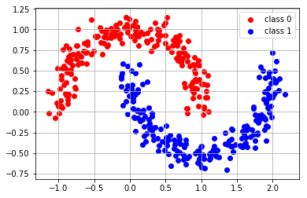
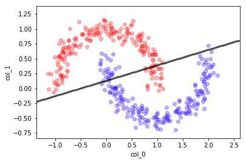
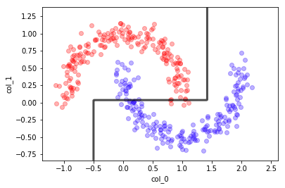
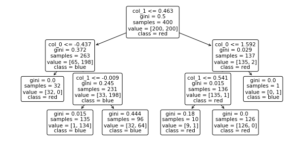
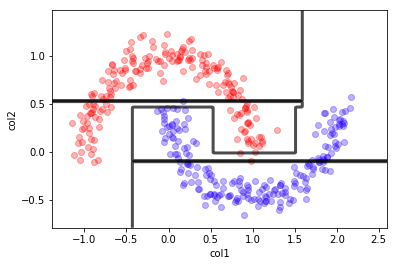
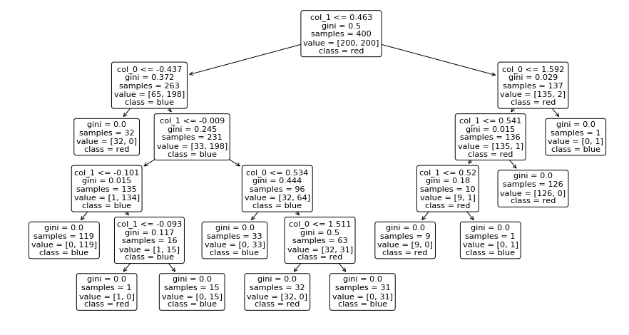
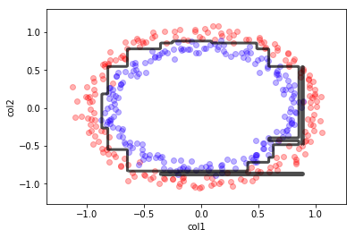
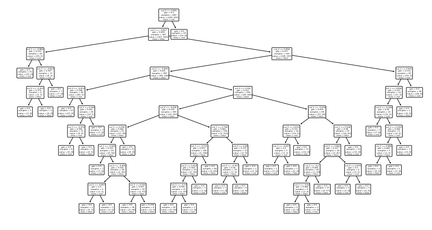

03.02 - SUPERVISED ALGORITHMS#
!wget --no-cache -O init.py -q https://raw.githubusercontent.com/rramosp/ai4eng.v1/main/content/init.py
import init; init.init(force_download=False); init.get_weblink()
from sklearn.datasets import *
import numpy as np
from local.lib import mlutils
from sklearn.tree import DecisionTreeClassifier
import matplotlib.pyplot as plt
%matplotlib inline
from IPython.display import Image
SUPERVISED ALGORITHMS#
We are given \(X\) and \(y\)
from sklearn.tree import DecisionTreeClassifier
X,y = make_moons(400, noise=0.1)
X.shape, y.shape
((400, 2), (400,))
## KEEPOUTPUT
plt.scatter(X[y==0][:,0], X[y==0][:,1], color="red", label="class 0")
plt.scatter(X[y==1][:,0], X[y==1][:,1], color="blue", label="class 1")
plt.legend();
plt.grid();

X[:10]
array([[-0.82512551, 0.51226287],
[ 0.60379822, 0.87094443],
[ 1.02259215, -0.52023705],
[ 1.02078996, -0.03804877],
[ 0.97289093, 0.1828423 ],
[ 0.89937567, 0.49863931],
[ 1.59814419, -0.26501538],
[ 0.19727319, -0.29126675],
[ 0.64073193, -0.53018568],
[ 1.63991665, -0.4218243 ]])
y[:10]
array([0, 0, 1, 0, 0, 0, 1, 1, 1, 1])
Clasificador Lineal#
from sklearn.linear_model import LogisticRegression
lr = LogisticRegression()
lr.fit(X,y)
lr.score(X,y)
/opt/anaconda2/envs/p36/lib/python3.6/site-packages/sklearn/linear_model/logistic.py:433: FutureWarning: Default solver will be changed to 'lbfgs' in 0.22. Specify a solver to silence this warning.
FutureWarning)
0.88
mlutils.plot_2Ddata(X, y, dots_alpha=.3)
mlutils.plot_2D_boundary(lr.predict, np.min(X, axis=0), np.max(X, axis=0),
line_width=3, line_alpha=.7, label=None)
plt.xlabel("col_0"); plt.ylabel("col_1");

Arboles de decision#
dt = DecisionTreeClassifier(max_depth=2)
dt.fit(X,y)
y_preds = dt.predict(X)
dt.score(X,y)
0.9225
## KEEPOUTPUT
dt = DecisionTreeClassifier(max_depth=3); dt.fit(X,y)
mlutils.plot_2Ddata(X, y, dots_alpha=.3)
mlutils.plot_2D_boundary(dt.predict, np.min(X, axis=0), np.max(X, axis=0),
line_width=3, line_alpha=.7, label=None)
plt.xlabel("col_0"); plt.ylabel("col_1");

samples: nb of data points in the split
value: nb samples of each class in the split
class: class assigned to the split (the majority class in value)
## KEEPOUTPUT
from sklearn.tree import plot_tree
plt.figure(figsize=(10,5))
plot_tree(dt, feature_names=["col_0", "col_1"], class_names=["red", "blue"], rounded=True);

## KEEPOUTPUT
dt = DecisionTreeClassifier(max_depth=10);
dt.fit(X,y)
mlutils.plot_2Ddata(X, y, dots_alpha=.3)
mlutils.plot_2D_boundary(dt.predict, np.min(X, axis=0), np.max(X, axis=0),
line_width=3, line_alpha=.7, label=None)
plt.xlabel("col1"); plt.ylabel("col2");

## KEEPOUTPUT
plt.figure(figsize=(15,8))
plot_tree(dt, feature_names=["col_0", "col_1"], class_names=["red", "blue"], rounded=True);

X,y = make_circles(400, noise=0.05)
## KEEPOUTPUT
dt = DecisionTreeClassifier(max_depth=10);
dt.fit(X,y)
mlutils.plot_2Ddata(X, y, dots_alpha=.3)
mlutils.plot_2D_boundary(dt.predict, np.min(X, axis=0), np.max(X, axis=0),
line_width=3, line_alpha=.7, label=None)
plt.xlabel("col1"); plt.ylabel("col2");

## KEEPOUTPUT
plt.figure(figsize=(15,8))
plot_tree(dt, feature_names=["col_0", "col_1"], class_names=["red", "blue"], rounded=True);

Random forests#
## KEEPOUTPUT
from sklearn.ensemble import RandomForestClassifier
rf = RandomForestClassifier(n_estimators=10, max_depth=10)
rf.fit(X,y)
print (rf.score(X,y),rf.score(X,y))
mlutils.plot_2Ddata(X, y, dots_alpha=.3)
mlutils.plot_2D_boundary(rf.predict, np.min(X, axis=0), np.max(X, axis=0),
line_width=3, line_alpha=.7, label=None)
0.995 0.995
(0.618075, 0.381925)
## KEEPOUTPUT
from sklearn.ensemble import RandomForestClassifier
rf = RandomForestClassifier(max_depth=10, n_estimators=100)
rf.fit(X,y)
print (rf.score(X,y))
mlutils.plot_2Ddata(X, y, dots_alpha=.3)
mlutils.plot_2D_boundary(rf.predict, np.min(X, axis=0), np.max(X, axis=0),
line_width=3, line_alpha=.7, label=None)
1.0
(0.500675, 0.499325)
Naive Bayes#
## KEEPOUTPUT
from sklearn.naive_bayes import GaussianNB
gb = GaussianNB()
gb.fit(X,y)
mlutils.plot_2Ddata(X, y, dots_alpha=.3)
mlutils.plot_2D_boundary(gb.predict, np.min(X, axis=0), np.max(X, axis=0),
line_width=3, line_alpha=.7, label=None)
(0.53705, 0.46295)
## KEEPOUTPUT
X,y = make_circles(300, noise=.1)
gb = GaussianNB()
gb.fit(X,y)
mlutils.plot_2Ddata(X, y, dots_alpha=.3)
mlutils.plot_2D_boundary(gb.predict, np.min(X, axis=0), np.max(X, axis=0),
line_width=3, line_alpha=.7, label=None)
(0.68615, 0.31385)
## KEEPOUTPUT
X,y = make_blobs(300, centers=2, cluster_std=2)
X, y = make_moons(400, noise=0.1)
gb = GaussianNB()
gb.fit(X,y)
mlutils.plot_2Ddata(X, y, dots_alpha=.3)
mlutils.plot_2D_boundary(gb.predict, np.min(X, axis=0), np.max(X, axis=0),
line_width=3, line_alpha=.7, label=None)
(0.517975, 0.482025)
observa que si alguna de las variables no es independiente el método falla
## KEEPOUTPUT
mc = mlutils.Example_Bayes2DClassifier(mean0=[2.5, 2.5], cov0=[[.9, .9],
[0.8, 1.1]],
mean1=[1, 2.5], cov1=[[0.5,.8],
[0.4,0.9]])
X,y = mc.sample(200)
mlutils.plot_2Ddata_with_boundary(mc.predict, X, y, line_width=3, line_color="green", dots_alpha=.3)
plt.title(" $\hat{\epsilon}=%.3f$"%mc.score(X,y)+" $\epsilon=%.3f$"%mc.analytic_score());
plt.grid();
/opt/anaconda3/envs/p36cpu/lib/python3.6/site-packages/scipy/stats/_multivariate.py:660: RuntimeWarning: covariance is not symmetric positive-semidefinite.
out = random_state.multivariate_normal(mean, cov, size)
## KEEPOUTPUT
gb.fit(X,y)
print (gb.score(X,y))
mlutils.plot_2Ddata(X, y, dots_alpha=.3)
mlutils.plot_2D_boundary(gb.predict, np.min(X, axis=0), np.max(X, axis=0),
line_width=3, line_alpha=.7, label=None)
0.85
(0.66155, 0.33845)